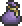
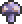
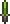
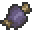
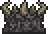

Vile Powder
| Vile Powder | |
|---|---|
|  | |
| Statistics | |
| Type | Miscellaneous Crafting material |
| Max stack | 99 |
| Shoot speed | 4 |
| Use time | 14 (Very Fast) |
| Tooltip | Removes the Hallow |
| Buy/Sell | 1 |
Each 5 Vile Powder are crafted from a Vile Mushroom at an Alchemy Station, and it is also sold by the Dryad NPC during a Blood Moon.
Vile Powder can be combined with Rotten Chunks at a Demon Altar to craft Worm Food, an item used to summon the Eater of Worlds. Vile powder can be used with Throwing Knives to upgrade them to Poisoned Knives.
Crafting
Recipe
| Crafting Station | ||
|---|---|---|
| Ingredient(s) | Amount | |
|  | Vile Mushroom | 1 |
| Result | ||
| Vile Powder | 5 | |
Used in
| Result | Ingredients | Crafting Station | |
|---|---|---|---|
|  | Poisoned Knife(20) | Vile Powder(1) | By Hand |
| Throwing Knife(20) | |||
|  | Worm Food | Vile Powder(30) |  Demon Altar |
| Rotten Chunk(15) | |||
See also
History
- 1.1: No longer does damage (was 8). Can remove Hallow.
- Pre-Release: Introduced.